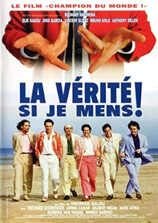
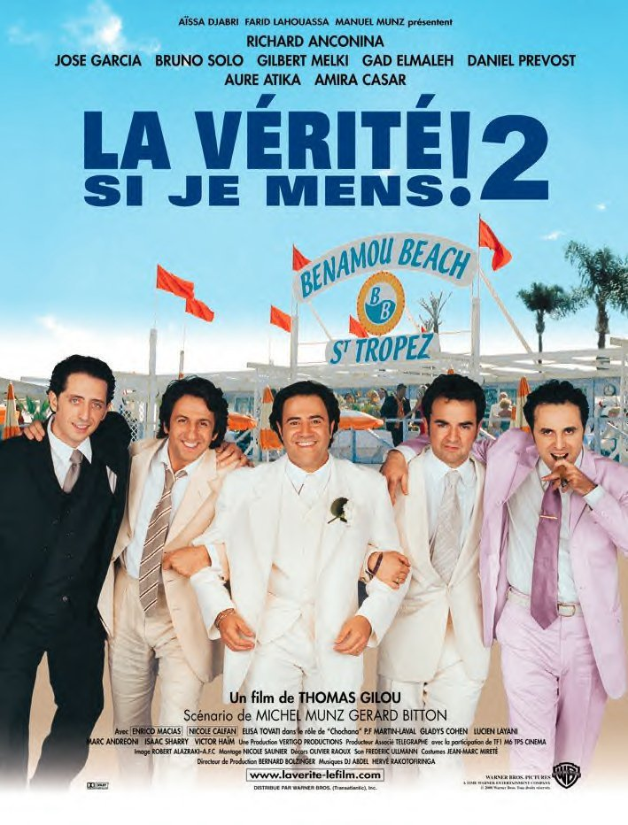
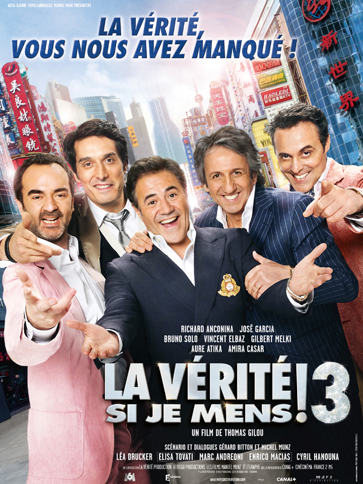

After graduating from Polytechnique School of London, I embraced coding as my new way of life
See for yourself|  Bande-Annonce |
La verite si je mens 1Edouard Vuibert est au bout du rouleau. Victor Benzakem, entrepreneur prospère du quartier du Sentier, le prend sous son aile. Le prenant pour un juif, il décide de l'embaucher comme manutentionnaire. |
|  Bande-Annonce |
La verite si je mens 2Dans le quartier du Sentier, Eddie Vuibert, Dov et Yvan sont confrontés aux procédés pour le moins expéditifs de leur nouveau client, `Eurodiscount', une chaîne européenne d'hypermarchés. |
|  Bande-Annonce |
La verite si je mens 3Nos chaleureux amis ont migré du Sentier moribond à la banlieue florissante d'Aubervilliers. La petite bande est toujours aussi soudée, solidaire que lors des épisodes précédents, et la vie suit son cours, au gré des petits événements familiaux et des affaires. |